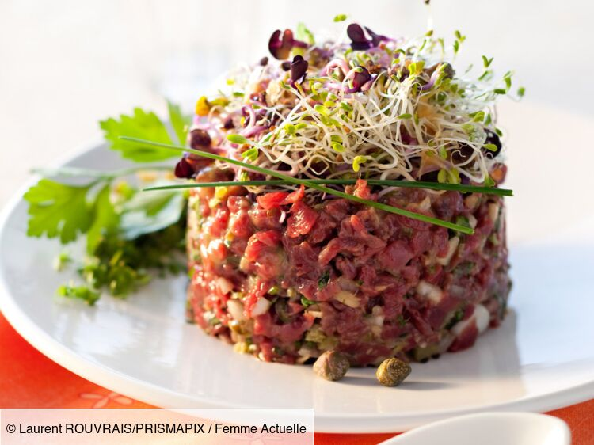

Tartare de boeuf au couteau recipe

Description
A tartare is a raw meat dish classically seasoned with a sauce tartare.
Ingredients
- Sauce tartare :
- Dijon mustard
- Egg yolk
- Lemon juice
- Capers
- Olive or neutral oil
- Chives, parsley
- Shallot
- Tabasco
- Beef filet
Steps :
- Chop your beef into small dices then put it in the fridge
- Mix your egg yolk and your mustard with a fork, then add in your oil,lemon juice and some tabasco.
- Minced the other ingredients and mix it with your sauce.
- Add in your meat.
- Served it in a circle shape with an egg yolk at the center, along with some herbs or pickles.
Home